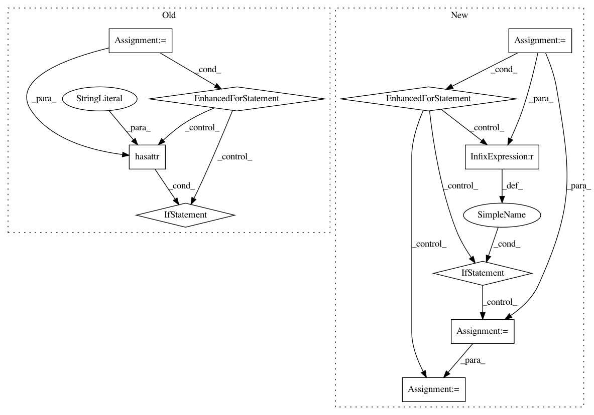

9bc2e60fd587389701c077f5bbff69250d6fb0b1,keras/callbacks.py,TensorBoard,_set_model,#TensorBoard#Any#,464
Before Change
self.model = model
self.sess = KTF.get_session()
if self.histogram_freq and self.merged is None:
layers = self.model.layers
for layer in layers:
if hasattr(layer, "W"):
tf.histogram_summary("{}_W".format(layer.name), layer.W)
if hasattr(layer, "b"):
tf.histogram_summary("{}_b".format(layer.name), layer.b)
if hasattr(layer, "output"):
tf.histogram_summary("{}_out".format(layer.name),
layer.output)
self.merged = tf.merge_all_summaries()
if self.write_graph:
if parse_version(tf.__version__) >= parse_version("0.8.0"):
self.writer = tf.train.SummaryWriter(self.log_dir,
After Change
if self.histogram_freq and self.merged is None:
for layer in self.model.layers:
for weight in layer.weights:
tf.histogram_summary(weight.name, weight)
if self.write_images:
w_img = tf.squeeze(weight)
shape = w_img.get_shape()
if len(shape) > 1 and shape[0] > shape[1]:
w_img = tf.transpose(w_img)
if len(shape) == 1:
w_img = tf.expand_dims(w_img, 0)
w_img = tf.expand_dims(tf.expand_dims(w_img, 0), -1)
tf.image_summary(weight.name, w_img)
if hasattr(layer, "output"):
tf.histogram_summary("{}_out".format(layer.name),
layer.output)
self.merged = tf.merge_all_summaries()
In pattern: SUPERPATTERN
Frequency: 3
Non-data size: 10
Instances
Project Name: keras-team/keras
Commit Name: 9bc2e60fd587389701c077f5bbff69250d6fb0b1
Time: 2016-09-07
Author: kuza55@gmail.com
File Name: keras/callbacks.py
Class Name: TensorBoard
Method Name: _set_model
Project Name: keras-team/keras
Commit Name: 94dbc3042f5a85b399f5ce2859d4e8fbafd235b9
Time: 2017-07-06
Author: me@taehoonlee.com
File Name: tests/keras/backend/backend_test.py
Class Name:
Method Name: check_single_tensor_operation
Project Name: keras-team/keras
Commit Name: 94dbc3042f5a85b399f5ce2859d4e8fbafd235b9
Time: 2017-07-06
Author: me@taehoonlee.com
File Name: tests/keras/backend/backend_test.py
Class Name:
Method Name: check_two_tensor_operation